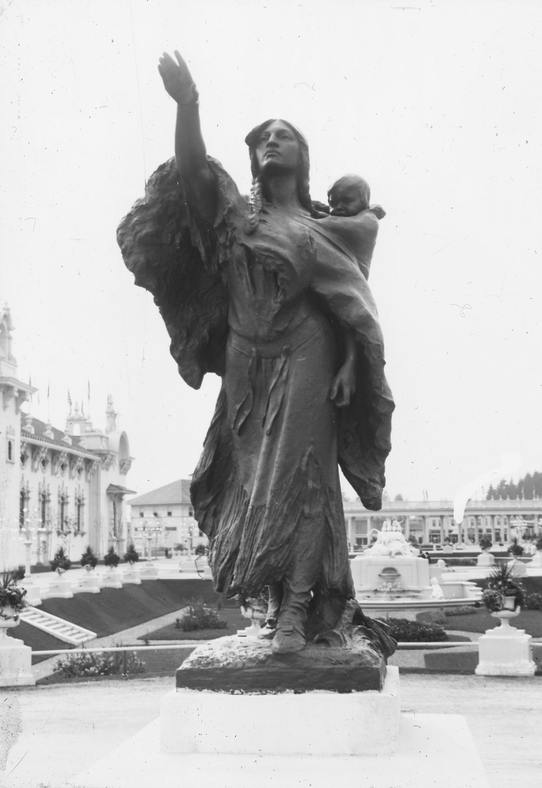

Sacajawea and Jean-Baptiste
Location in 1905: 45.53802344, -122.70688355
Current Location: 45.52161329, -122.70218298
A bronze statue of Sacagawea and Jean Baptiste Charbonneau by Alice Cooper. Later moved to Washington Park. 